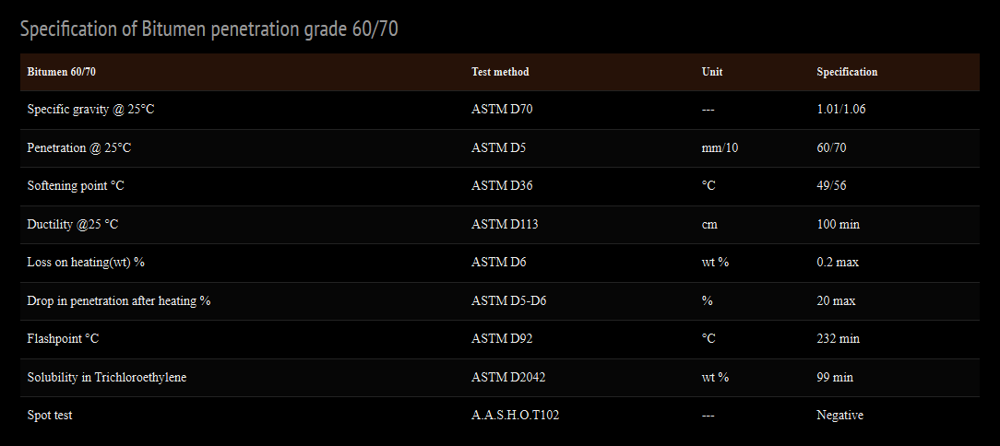

Definition of Bitumen Penetration Grade 60/70 – Iran Bitumen Supply Int │ IBSI
Bitumen Penetration Grade 60/70 is one of the most widely used paving‑grade bitumen types, defined by a penetration value between 60 and 70 under standard test conditions. This grade is commonly used in road construction, hot mix asphalt (HMA) production, and general pavement applications. At Iran Bitumen Supply Int │ IBSI, our Bitumen 60/70 is produced through the controlled oxidation (air‑blowing) of high‑quality vacuum bottom—the residue obtained from the vacuum distillation of crude oil in refineries. The resulting bitumen offers a balanced hardness level, making it suitable for mild‑climate regions and medium‑traffic roadways. Bitumen 60/70 is classified based on penetration value and softening point, with the designation determined solely by penetration range. Like all penetration‑grade bitumens, it exhibits thermoplastic behavior, softening at high temperatures and hardening at lower temperatures. This temperature‑viscosity relationship is essential for evaluating performance characteristics such as adhesion, rheology, durability, and application temperature. The stiffness and temperature sensitivity of Bitumen 60/70 depend on the crude oil source and refining method. As a semi‑hard penetration grade, it is widely used in the production of asphalt pavements and serves as a base material for many other bituminous products. Penetration testing measures the depth (in tenths of a millimeter) to which a standard needle penetrates the bitumen sample in 5 seconds at 25°C, determining its hardness.
HS Code of Bitumen 60/70
Bitumen Penetration Grade 60/70 is typically classified under: HS Code 27132000 – Petroleum bitumen and other residues from petroleum oils. This internationally recognized Harmonized System (HS) code ensures accurate product identification for global trade and customs documentation.
Why HS Code Accuracy Matters
Correct HS Code declaration is essential for:
- ✔ Accurate calculation of customs duties and taxes
- ✔ Avoiding shipment delays and penalties
- ✔ Ensuring smooth international trade operations
Applications of Bitumen Penetration Grade 60/70
Bitumen 60/70 supplied by Iran Bitumen Supply Int │ IBSI is ideal for:
- ✔ Road construction and highway surfacing
- ✔ Hot mix asphalt (HMA) for base and wearing courses
- ✔ Pavement rehabilitation and maintenance
- ✔ Roofing and waterproofing products
- ✔ Pipe coating
- ✔ Soundproofing materials
- ✔ Bitumen emulsions and sealants
- ✔ Automotive industry applications
- ✔ Bridge deck waterproofing
- ✔ Airport runways
- ✔ Sports surfaces
Due to its medium penetration range, Bitumen 60/70 is especially suitable for mild‑climate regions where balanced flexibility and stiffness are required.
Packaging Options for Bitumen 60/70
At Iran Bitumen Supply Int │ IBSI, Bitumen 60/70 is available in multiple packaging formats to meet diverse project and logistics requirements: New steel drums (150 kg, 180 kg, 220 kg), Jumbo bags (1 MT), Bitubags (300 kg). Packaging selection depends on the bitumen’s viscosity, handling needs, and transportation method.
Density of Bitumen Penetration Grade 60/70
Density is a key physical property influencing how bitumen behaves during storage, transport, and application. For Bitumen 60/70, the density typically ranges between: 1,000 – 1,050 kg/m³. This density range ensures optimal performance in asphalt mixtures, contributing to durability, stability, and long‑term pavement strength.
Quality & Safety Guarantee – Bitumen Penetration Grade 60/70
Iran Bitumen Supply Int │ IBSI guarantees the quality of Bitumen Penetration Grade 60/70 through strict quality control procedures. We work with independent international inspection companies to verify the quality and quantity of each shipment during loading. Our QC team conducts batch‑wise testing before dispatch to ensure full compliance with ASTM standards. This rigorous process ensures that every shipment meets the performance requirements demanded by modern road construction and industrial applications.
Supplier of Bitumen 60/70 – Iran Bitumen Supply Int │ IBSI
With extensive experience in the bitumen industry, Iran Bitumen Supply Int │ IBSI supplies Bitumen 60/70 to customers across Asia, Africa, Europe, India and the Middle East. We offer flexible shipping options, including bulk cargo, new steel drums, and jumbo bags, delivered to ports worldwide.
How to Order Bitumen 60/70
To receive a quotation and order confirmation, please provide:
- ✔ Required quantity (MT)
- ✔ Preferred packaging type
- ✔ Destination port and country
- ✔ Incoterms (FOB, CFR, or CIF)
- ✔ Payment terms
Upon receiving your details, we will send a formal quotation, Proforma Invoice, loading plan, estimated delivery time, and documentation list.

Specification of Bitumen 60/70